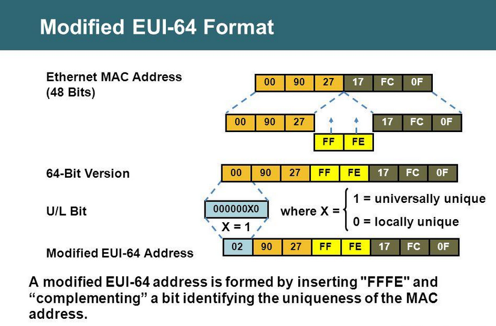

IPv6 Workshop
WIFI
SSID: BEEA
PSK: laatstedonderdagvandemaand
Johan Adriaans - johan@driaans.nl
Intro verhaaltje
Waarom geen IPv5?
IPv1-3 zijn dev-versies van IPv4
IPv5 is het Internet Stream Protocol
Nooit publiek gebruikt, wel vastgelegd.
Dus.. IPv6
Decimal Keyword Version Reference
0-1 Reserved [Jon_Postel][RFC4928]
2-3 Unassigned [Jon_Postel]
4 IP Internet Protocol [RFC791][Jon_Postel]
5 ST ST Datagram Mode [RFC1819][Jim_Forgie]
6 IPv6 Internet Protocol version 6 [RFC-ietf-6man-rfc2460bis-13]
7 TP/IX TP/IX: The Next Internet [RFC6814]
8 PIP The P Internet Protocol [RFC1621]
9 TUBA TUBA [RFC1347]
10-14 Unassigned [Jon_Postel]
15 Reserved [Jon_Postel]
Waarom dan wel IPv6?
31 januari 2011 Top-level exhaustion
15 april 2011 Asia-Pacifica op! (APNIC)
14 september 2012 Europe ook alles op! (RIPE NCC)
10 juni 2014 Latin America/Caribbean leeg (LACNIC)
24 september 2015 North America ook leeg (ARIN)
Africa kan nog even door \o/ (AFRINIC)
Maar ook!
Larger Address Space
Simplified Header
End-to-end Connectivity (NAT b-gone)
Auto-configuration
Faster Forwarding/Routing
No Broadcast
Anycast Support
Mobility
Extensibility

Check je adres
- ifconfig
- ip addr show
- ipconfig
- netstat -in
Hey kijk! FE80::/10
fe80::20c:29ff:fe42:4dd5
- Dit is je link-local adres
- Begint altijd met FE80 met een prefix-length van 10
- Deze adressen worden niet gerouteerd
- Hiermee wordt alle autoconfiguratie gedaan
- MAC adres van IPv6 *ducks*
- Random of op basis van het MAC adres
Neighborhood
Gluren bij de buren
- ip -6 neighbor show
- ndp -a
- netsh interface ipv6 show neighbors
IPv6 adressen
- 128 bits
- 8 groepen van 16 bits
- 4 bits per hexadimaal getal (0-15)
| 128 bits |
+-----------------------------------------------------------------+
| node address |
+-----------------------------------------------------------------+
Adresnotatie
fe80:0000:0000:0000:020c:29ff:fe42:4dd5
010.000.000.001
10.0.0.1
fe80:0:0:0:20c:29ff:fe42:4dd5
fe80::20c:29ff:fe42:4dd5
fd00:beea::1
https://[fd00:beea::1]:443/
scp ./local-file [fd00:beea::1]:~
Address types
- Adressen
- Link-Local - FE80::/10
- Global Unicast Address (GUA) - 2000::/3
- Unique Local Address (ULA) - FC00::/7
- Addressing / Routing
- Unicast - 1 to 1
- Multicast - 1 to many
- Anycast - many to few
::0/???
Prefix-length
- FE80::/10
- FC00::/7
- 2000::/3
- ::/127
F E 8 0
1111 1110 1000 0000
xxxx xxxx xx-- ----
F C 0 0
1111 1100 0000 0000
xxxx xxxx x--- ----
Spoedcursus talstelsels
Inkorten
- Verwijder voorgaande nullen
- Meerdere opvolgende nul-blokken samenvoegen tot 1 ::
Oefening
- 1001 : 2000 : 0003 : 0400 : 0000 : 0000 : 7777 : 0800
- 1001 : 2000 : 3 : 400 :: 7777 : 800
- 1001 : 0000 : 0000 : 0400 : 0000 : 0000 : 7777 : 0800
- 1001 :: 400 :: 7777 : 800
- 1001 :: 400 : 0 : 0 : 7777 : 800
Link-local address
fe80:0000:0000:0000:020c:29ff:fe42:4dd5
| 10 | | |
| bits | 54 bits | 64 bits |
+----------+-------------------------+----------------------------+
|1111111010| 0 | interface ID |
+----------+-------------------------+----------------------------+
| FE80 | :: | 20c:29ff:fe42:4dd5 |
| ~ ff:fe ~ |
- Interface ID = Modified EUI-64 Format
- Dit is gebaseerd op het MAC adres
- Kan gevoelig zijn, wordt vaak random gemaakt
- Zie RFC 4941 voor uitleg
Modified EUI-64 Format
Oefening
Maak van de volgende MAC adressen Link-local adressen
- d4 : 3d : 7e : 25 : f1 : 19
- fe80 :: d63d : 7eff : fe25 : f119
- 08 : 9e : 08 : 49 : dd : c5
- fe80 :: a9e : 08ff : fe49 : ddc5
bit 7 moet naar 1
Multicast adressen
| 8 | 4 | 4 | 112 bits |
+------ -+----+----+---------------------------------------------+
|11111111|flgs|scop| group ID |
+--------+----+----+---------------------------------------------+
- FF00::/8
- Flags (en Multicast) worden uitgelegd in RFC4291
- Scope
- 1: Interface-Local scope
- 2: Link-Local scope
- 4: Admin-Local scope
- 5: Site-Local scope
- 8: Organization-Local scope
- E: Global scope
- Vastgelegde Group IDs
- 1: All nodes
- 2: All routers
ping6 ff02::1
Oh jee.. Connect: invalid argument, No route to host
- Controleer je route tabel
- netsat -rn
- route -n
- ip route show
- route print
Iedere interface heeft een route naar ff02::/32 en fe80::/64
De route is ambigue, de uitgaande interface moet worden aangegeven
ping6 -I eth0 ff02::1
ping6 ff02::1%eth0
Multicast groups
Waarom luistert mijn systeem naar die multicast ping?
- Controlleer je group memberships
- netstat -g
- ip maddr
- netsh interface ip show joins
- IPv6
- ff02::1
- ff02::1:ff42:4dd5
- MAC / Hardware
- 33:33:00:00:00:01
- 33:33:ff:42:4d:d5
DAD
Duplicate Address Detection
- Node wil ip adres FE80::1000:2000:3333:4000
- Node wordt lid van multicast groepen:
- FF02::1
- FF02::1:FF33:4000
- Node stuurt Neighbor Sollicitation naar FF02::1:FF33:4000 vanaf ::
- Luistert op FF02::1 of er een Neighbor Advertisement langs komt
- Zo niet, dan is het adres vrij
- NA en NS pakketten worden ook periodiek verstuurd om te controleren of adressen nog geldig zijn.
Dus er is al een netwerk?
Ja, er is nu al een volledig functionerend netwerk
Niet heel erg bruikbaar, maar functioneel
Start Wireshark
Luister naar wifi interfact met filter: ip6
Kijk wat je langs ziet komen
Teredo Tunnel
Kans op een IPv6 verbinding thuis is in Nederland ongeveer 10%
Teredo tunnels zijn een tijdelijke oplossing
Alle teredo tunnel adressen beginnen met 2001::/32
IPv4 tunnel over internet naar een IPv6 endpoint
Tunnel door ipv4 naar ipv6 endpoint
Tunnelbroker.net
Prepare the pi
- Raspbian Lite Jessie op de SD-card
- SSH openzetten
- Wachtoord van de pi user aanpassen
- Keyboard layout naar US zetten
- vim installeren :)
- Met draad aan de router
- Zoeken op het netwerk, met ipv6 natuurlijk
Pi een statisch ipv4 geven
- Dit is nodig voor de tunnel
- Bekijk je neigbourhood en vind een MAC adres dat begint met b8:27:be
auto eth0
iface eth0 inet static
address 192.168.1.2
netmask 24
gateway 192.168.1.1
Eerst maar even een firewall
- firewall script uploaden
- net.ipv6.conf.all.forwarding=1 in /etc/sysctl.conf
- systcl -p
- sh firewall.sh
- apt install iptables-persistent
Tunnel
- Account aanmaken op tunnelbroker.net
- De configuratie van tunnelbroker.net overnemen
- Let op dat je bij local het statische ip invoert (wanneer je achter een NAT zit)
- Het <global-prefix>::1 adres toevoegen aan etho
iface eth0 inet6 static
address 2001:470:1f15:a3::1
netmask 64
auto he-ipv6
iface he-ipv6 inet6 v4tunnel
address 2001:470:1f14:a3::2
netmask 64
endpoint 216.66.84.46
local 192.168.1.2
ttl 255
gateway 2001:470:1f14:a3::1
IPv6 internet! En nu SLAAC
- SLAAC = Stateless Address Auto Configuration
- Net als Neighbor Sollicitation en Advertisement is er
ook Router Sollicitation en Advertisement. - Een IPv6 netwerk kan zichzelf zonder DHCP server configureren. Dit heet SLAAC
- Hiervoor is een Router Advertisement Daemon nodig
- radvd installeren
vi /etc/radvd.conf
interface eth0
{
AdvSendAdvert on;
AdvManagedFlag on;
prefix 2001:470:1f15:a3::/64
{
AdvOnLink on;
AdvAutonomous on;
};
RDNSS 2001:4860:4860::8888 2001:4860:4860::8844 {
};
};
Doen
- Test de internet verbinding, ipv6 test sites genoeg
- curl ifconfig.network
- Probeer jezelf vanaf internet te pingen
- Probeer een verbinding naar jezelf te maken
- Probeer het opnieuw, maar nu met de poort open in de firewall
- Sta even stil bij het feit dat er geen NAT wordt gebruikt
ULA
Unique Local Address
Prefix: FC00/7
Wordt niet gerouteerd
Bit 8 = local bit en moet dus altijd op 1
Dus FD00/7
| 7 bits |1| 40 bits | 16 bits | 64 bits |
+--------+-+------------+-----------+----------------------------+
| Prefix |L| Global ID | Subnet ID | Interface ID |
+--------+-+------------+-----------+----------------------------+
DHCP6
- isc-dhcp-server installeren
- OPTIONS="-6" in /etc/default/isc-dhcp-server
- touch /var/lib/dhcp/dhcpd6.leases
# /etc/dhcp/dhcpd.conf
ddns-update-style none;
default-lease-time 600;
max-lease-time 7200;
subnet6 fd00:beea::/64 {
range6 fd00:beea::10 fd00:beea::ff;
option dhcp6.name-servers 2001:4860:4860::8888, 2001:4860:4860::8844;
}
De rest laten samenwerken met dhcp
- Static fd00:beea::1 toevoegen
- Via radvd vertellen dat er een dhcp server is voor range fd00:beea::/64
# /etc/network/interfaces
iface eth0 inet6 static
address fd00:beea::1
netmask 64
# /etc/radvd.conf
interface eth0
{
AdvManagedFlag on;
AdvSendAdvert on;
prefix 2001:470:1f15:a3::/64
{
AdvOnLink on;
AdvAutonomous on;
};
RDNSS 2001:4860:4860::8888 2001:4860:4860::8844 {
};
prefix fd00:beea::/64
{
AdvAutonomous off;
};
};
fd00:beea::/64
Bekijk je local interface
Controleer je DNS instellingen
Kun je ook alle hosts in de fd00:beea::/64 range pingen?
En in de 2001:470:1f15:a3::/64 range?
DONE!
Veel!
Klaar!
Biear!